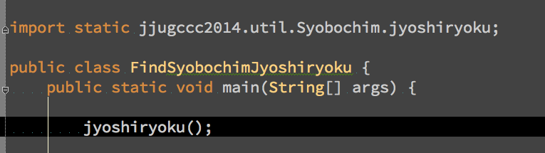
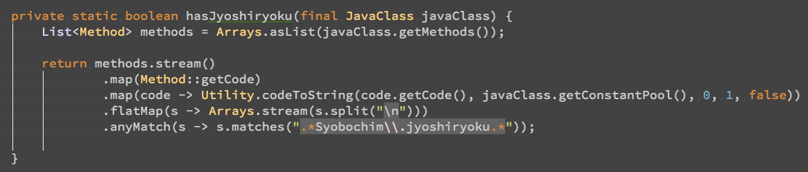

syobochimの
女子力を
Classファイルから
BCELつかって
見つけてみた
## syobochimの女子力みつからない

## あまりにも見つからないから
## Classファイルから女子力を探すことにしました。
## syobochimの女子力と仮定するもの
## Syobochimクラス
## jyoshiryokuメソッド

Javaファイルのままだと

メソッドが使われている場所をみても
どのクラスのメソッドかわからない
IDE使えばいけるという元も子もない話はしない！！
# じゃあ
# Classファイル
# だっ！！！
Hoge.java
↓ $ javac Hoge.java
Hoge.class
## エディタで開くとこうなる

ので、Classファイルを読むコマンドを使う
Hoge.class
$ javap -c -p Hoge

## ちなみに、目的のメソッド呼び出しは
## こう出力される

## インスタンス生成でも
## static呼び出しでも一緒で安心(๑´ڡ`๑)
## でも、これだと、
## 毎回コマンド打たなければならない
## ファイルがいっぱいだとめんどくさい
## そもそも出力結果に対して検索するの辛い
## なので
## Classファイルを
## 静的解析しましょう
## つかったもの
# BCEL
http://commons.apache.org/proper/commons-bcel/
## javaClassを宣言して

## 解析していくことで

## javapしたときと同じ情報を取得することができる

こうすれば女子力を見つけられる！！

Java 8 の stream のおかげですごく簡単に書ける！！
## これで女子力を見つけるのがはかどりますね！！